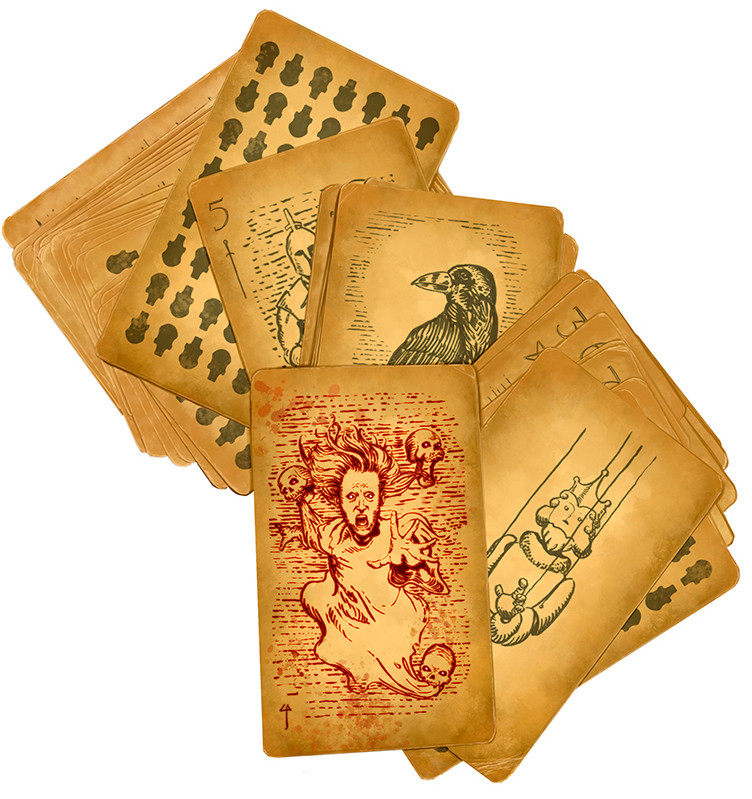

Tarokka des Âmes de Luba
Objet merveilleux, artéfact (nécessite un lien)
Tous les esprits ne sont pas des âmes tragiques, égarés en chemin vers l'au-delà. Certains languissent comme des prisonniers. Leur âme est si perfide que les mortels n'osent pas la libérer par crainte de répercussions inattendues dans l'après-vie. Créé par une figure légendaire des Vistani, le Tarokka des Âmes de Luba a façonné la destinée d'innombrables héros. Les prophéties issues de ce jeu de cartes ont également révélé de grands maux et guidé sa créatrice à la rencontre de forces infâmes. Maintes fois, la créatrice du jeu de cartes, Mère Luba, a frôlé la catastrophe, sauvée par son intuition aiguisée. Malgré tout, elle n'a pu échapper à toutes les vilenies. Dans les situations les plus graves, Mère Luba est parvenue à piéger des engeances du mal absolu à travers les trames du destin en les emprisonnant dans son jeu de tarokka. Ces mauvais esprits résident là, captifs d'un domaine du nether dissimulé parmi les cartes, dans l'attente d'un revirement inéluctable et tragique du destin.
Comme tout jeu de tarokka, le Tarokka des Âmes de Luba se compose de 54 cartes somptueusement illustrées, incluant les 14 cartes majeures ainsi que les 40 autres cartes divisées en 4 suites : les deniers, les glyphes, les étoiles et les épées.
Propriétés aléatoires. L'artéfact possède un certain nombre de propriétés déterminées aléatoirement :
• 2 propriétés bénéfiques mineures
• 2 propriétés néfastes mineures
Sorts. Lorsque vous tenez le jeu de cartes, vous pouvez utiliser une action pour lancer un des sorts suivants (sauvegarde DD 18) : compréhension des langues, détection de la magie, détection du mal et du bien, détection du poison et des maladies, localisation d'objet, scrutation. Une fois que vous avez utilisé le jeu de cartes pour lancer un sort, vous ne pouvez pas lancer ce sort à nouveau avec le jeu avant la prochaine aube.
Vision persistante. Lorsque vous tenez le jeu de cartes, vous réussissez automatiquement les jets de sauvegarde de Constitution demandés pour maintenir votre concentration sur un sort de divination.
Caprice du destin. Au prix d'une action, vous pouvez tirer une carte du jeu et renverser la chance d'une autre créature que vous pouvez voir à 4,50 mètres ou moins de vous. Choisissez un des effets suivants :
Bonheur. La créature obtient un avantage à ses jets d'attaques, de sauvegarde et de caractéristique pour la prochaine heure.
Malheur. La créature obtient un désavantage à ses jets d'attaques, de sauvegarde et de caractéristique pour la prochaine heure.
Le jeu de cartes peut être utilisé deux fois de cette manière. Vous en récupérez toutes les utilisations à la prochaine aube.
Prisonniers du destin. À chaque utilisation de la propriété Caprice du destin, il y a une chance qu'une des âmes captives du jeu de cartes s'évade. Lancez 1d100 et consultez la table ci-dessous. Si vous tombez sur une carte majeure, l'âme qui lui est associée s'échappe alors. Référez-vous au Monster Manual pour connaître les statistiques de la créature. Si vous obtenez le chiffre d'une âme déjà libérée, lancez à nouveau le dé.
L'âme libérée apparaît dans un endroit aléatoire à moins de 10d10 x 1,5 km de votre position et elle y terrorise les êtres vivants. Jusqu'à ce que l'âme ainsi relâchée ne soit détruite, elle obtient les effets de bonheur de la propriété Caprice du destin tandis que vous et la cible originale de Caprice du destin subissez les effets du malheur.
Battage du destin. Si plus de 7 jours s'écoulent depuis votre dernière utilisation du Caprice du destin, votre lien avec le Tarokka des Âmes de Luba se termine. Vous ne pouvez plus vous y lier de nouveau à moins qu'une autre créature utilise Caprice du destin sur vous.
Destruction du jeu de cartes. Le Tarokka des Âmes de Luba peut être détruit seulement si les 14 âmes qu'il contient ont été libérées et détruites. Ce faisant, une quinzième âme se révèle, une liche. Elle réside dans la carte du Nether, qui se matérialise uniquement après que les 14 âmes aient été défaites. Si cette ancienne entité est détruite, la carte du Nether se dissipe et le jeu de cartes devient un jeu de tarokka normal, sans propriété spéciale. Mais il contient une nouvelle carte dont l'apparence est déterminée par le MD.
Comme tout jeu de tarokka, le Tarokka des Âmes de Luba se compose de 54 cartes somptueusement illustrées, incluant les 14 cartes majeures ainsi que les 40 autres cartes divisées en 4 suites : les deniers, les glyphes, les étoiles et les épées.
Propriétés aléatoires. L'artéfact possède un certain nombre de propriétés déterminées aléatoirement :
• 2 propriétés bénéfiques mineures
• 2 propriétés néfastes mineures
Sorts. Lorsque vous tenez le jeu de cartes, vous pouvez utiliser une action pour lancer un des sorts suivants (sauvegarde DD 18) : compréhension des langues, détection de la magie, détection du mal et du bien, détection du poison et des maladies, localisation d'objet, scrutation. Une fois que vous avez utilisé le jeu de cartes pour lancer un sort, vous ne pouvez pas lancer ce sort à nouveau avec le jeu avant la prochaine aube.
Vision persistante. Lorsque vous tenez le jeu de cartes, vous réussissez automatiquement les jets de sauvegarde de Constitution demandés pour maintenir votre concentration sur un sort de divination.
Caprice du destin. Au prix d'une action, vous pouvez tirer une carte du jeu et renverser la chance d'une autre créature que vous pouvez voir à 4,50 mètres ou moins de vous. Choisissez un des effets suivants :
Bonheur. La créature obtient un avantage à ses jets d'attaques, de sauvegarde et de caractéristique pour la prochaine heure.
Malheur. La créature obtient un désavantage à ses jets d'attaques, de sauvegarde et de caractéristique pour la prochaine heure.
Le jeu de cartes peut être utilisé deux fois de cette manière. Vous en récupérez toutes les utilisations à la prochaine aube.
Prisonniers du destin. À chaque utilisation de la propriété Caprice du destin, il y a une chance qu'une des âmes captives du jeu de cartes s'évade. Lancez 1d100 et consultez la table ci-dessous. Si vous tombez sur une carte majeure, l'âme qui lui est associée s'échappe alors. Référez-vous au Monster Manual pour connaître les statistiques de la créature. Si vous obtenez le chiffre d'une âme déjà libérée, lancez à nouveau le dé.
| d100 | Carte | Âme |
|---|---|---|
| 1 | Artéfact | Crânefeu |
| 2 | Bête | Âme en peine |
| 3 | Le cassé | Banshie |
| 4 | Seigneur des ténèbres | Vampire |
| 5 | Donjon | Momie |
| 6 | Bourreau | Chevalier de la mort |
| 7 | Fantôme | Fantôme |
| 8 | Cavalier | Seigneur momie |
| 9 | Innocent | Fantôme |
| 10 | Marionnette | Momie |
| 11 | Brumes | Âme en peine |
| 12 | Corbeau | Vampirien |
| 13 | Devin | Vampire |
| 14 | Tentateur | Vampirien |
| 15-00 | -- | -- |
L'âme libérée apparaît dans un endroit aléatoire à moins de 10d10 x 1,5 km de votre position et elle y terrorise les êtres vivants. Jusqu'à ce que l'âme ainsi relâchée ne soit détruite, elle obtient les effets de bonheur de la propriété Caprice du destin tandis que vous et la cible originale de Caprice du destin subissez les effets du malheur.
Battage du destin. Si plus de 7 jours s'écoulent depuis votre dernière utilisation du Caprice du destin, votre lien avec le Tarokka des Âmes de Luba se termine. Vous ne pouvez plus vous y lier de nouveau à moins qu'une autre créature utilise Caprice du destin sur vous.
Destruction du jeu de cartes. Le Tarokka des Âmes de Luba peut être détruit seulement si les 14 âmes qu'il contient ont été libérées et détruites. Ce faisant, une quinzième âme se révèle, une liche. Elle réside dans la carte du Nether, qui se matérialise uniquement après que les 14 âmes aient été défaites. Si cette ancienne entité est détruite, la carte du Nether se dissipe et le jeu de cartes devient un jeu de tarokka normal, sans propriété spéciale. Mais il contient une nouvelle carte dont l'apparence est déterminée par le MD.
MÈRE LUBA ET LES VISTANI
La créatrice du Tarokka des Âmes, Mère Luba, était l'un des meneurs les plus influents parmi les Vistani. Durant des générations, les Vistani ont arpenté la Grisombre qui est composé de nombreux demi-plans terrifiants, comme la Barovie, un royaume peuplé de vampires. Ces voyageurs ont appris une multitude de secrets issus de ces domaines et ont multiplié les rencontres avec les horreurs de la Grisombre. La plupart des bandes de Vistani acceptent les voyageurs ayant de bonnes dispositions qui proviennent de différentes sphères et d'origines diverses. Ils accueillent tous ceux qui cherchent un domicile au milieu des routes sans fin et des panoramas cachés au travers des brumes.
Mère Luba, une halfeline Vistani, a dirigé un des plus grands groupes de Vistani dans la Grisombre. Elle vient du même monde d'où est originaire le comte Strahd von Zarovich et Madame Eva. Elle a rassemblé une communauté de bienveillance et de résilience, une rarissime entreprise au cœur du plan des Ombres. Elle a donné l'exemple en accueillant chaleureusement les étrangers, en nourrissant les affamés et en défiant toutes les cruautés. Jadis, elle et Madame Eva étaient amies, jusqu'à ce que cette dernière ait commencé à manigancer avec les créatures de la nuit. « Nous naviguons parmi les ténèbres » dit Mère Luba, « Mais nous devons toujours servir de lumière pour nos amis voyageurs ».
Il y a quelques années, Mère Luba est disparue dans les brumes, ne laissant derrière elle que le Tarokka des Âmes de Luba. Il se dit que si vous y tirez la carte des Brumes, vous pouvez entendre le murmure de sa douce voix.
La créatrice du Tarokka des Âmes, Mère Luba, était l'un des meneurs les plus influents parmi les Vistani. Durant des générations, les Vistani ont arpenté la Grisombre qui est composé de nombreux demi-plans terrifiants, comme la Barovie, un royaume peuplé de vampires. Ces voyageurs ont appris une multitude de secrets issus de ces domaines et ont multiplié les rencontres avec les horreurs de la Grisombre. La plupart des bandes de Vistani acceptent les voyageurs ayant de bonnes dispositions qui proviennent de différentes sphères et d'origines diverses. Ils accueillent tous ceux qui cherchent un domicile au milieu des routes sans fin et des panoramas cachés au travers des brumes.
Mère Luba, une halfeline Vistani, a dirigé un des plus grands groupes de Vistani dans la Grisombre. Elle vient du même monde d'où est originaire le comte Strahd von Zarovich et Madame Eva. Elle a rassemblé une communauté de bienveillance et de résilience, une rarissime entreprise au cœur du plan des Ombres. Elle a donné l'exemple en accueillant chaleureusement les étrangers, en nourrissant les affamés et en défiant toutes les cruautés. Jadis, elle et Madame Eva étaient amies, jusqu'à ce que cette dernière ait commencé à manigancer avec les créatures de la nuit. « Nous naviguons parmi les ténèbres » dit Mère Luba, « Mais nous devons toujours servir de lumière pour nos amis voyageurs ».
Il y a quelques années, Mère Luba est disparue dans les brumes, ne laissant derrière elle que le Tarokka des Âmes de Luba. Il se dit que si vous y tirez la carte des Brumes, vous pouvez entendre le murmure de sa douce voix.
Tasha´s Cauldron of Everything
